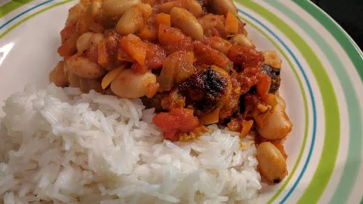

Bean & sausage hotpot

Warm up after work with this ultimate comfort food dish, just add a buttery dollop of mash.
Servings: 4
Total: 45 mins
Ingredients
- 8 large sausages, course-cut ones like Toulouse or Cumberland are ideal
- 3x 400 g cans butter beans, beans
- 1 tbsp black treacle or muscovado sugar
- 1 tsp English mustard
- 2 tbsp olive oil
- 1 onion, finely chopped
- 1 carrots, finely chopped
- 1 celery sticks, finely chopped
- 1 clove garlic, crushed
- 2 bay leaves
- 1 tsp sugar
- 2x 400 g cans chopped tomatoes
Instructions
- Heat the
oil2 tbsp
in a pan and add the sauce vegetables and bay leaves2
. Stir in the sugar1 tsp
with some salt. Gently cook for 10-15 mins until the veg is tender. Stir in the tomatoes2x 400 g cans
and 150 ml water. Simmer very gently for 30 mins until the sauce has reduced by two-thirds and is very thick.
- In a large casserole, fry the
sausages8 large
until brown all over - about 10 mins.
- Add the tomato sauce, stirring well, then stir in the beans,
treacle1 tbsp
or sugar1 tsp
and mustard1 tsp
. Bring to the simmer, cover and cook for 30 mins. Great served with crusty bread or rice.
-
kcal
474
-
fat
23 g
-
saturates
8 g
-
carbs
39 g
-
sugar
10 g
-
fibre
9 g
-
protein
29 g
-
salt
3.55 g
www.bbcgoodfood.com
Short Link
Long Link